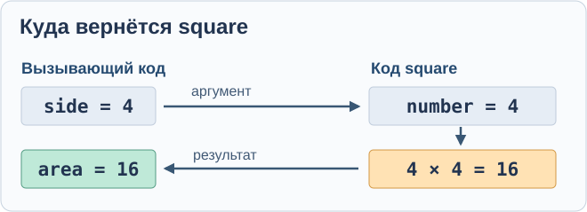

Функции, ссылки и указатели
Функция — именованная часть программы, которую можно вызвать. Например, square(4) означает «вызвать функцию square и передать ей число 4». Чтобы воспользоваться результатом, его можно присвоить переменной.
Передача по значению
В вызове square(4) параметр number получает значение 4. Функция возвращает 16. Если вызвать square(x), внутри функции появляется собственный параметр с копией значения x. Присваивание параметру не меняет x в вызывающем коде.
int square(int number) {
return number * number;
}
int side = 4;
int area = square(side); // area получает 16, side по-прежнему равно 4.
В объявлении int square(int number) первый int задаёт тип результата, а int number объявляет параметр. При вызове значение аргумента side копируется в number.
В примере предполагается, что результат помещается в int. return заканчивает работу функции и передаёт результат. Если функция только выполняет действие, можно объявить её с результатом void. Тогда return; означает «закончить работу сейчас».
Как процессор вызывает функцию. Если square вызывается отдельной командой, процессору понадобятся две вещи — значение аргумента и адрес команды, с которой продолжить работу после возврата. На многих платформах маленький аргумент передают в регистре. Функция умножает число, оставляет результат в оговорённом регистре и возвращает управление вызывающему коду.

Компилятор также может подставить тело square прямо на место вызова. Такое преобразование называют встраиванием. Тогда переход к функции и обратный переход исчезают, а результат для side = 4 остаётся равен 16.
Ссылка и изменение исходной переменной
Ссылка — другое имя уже существующего объекта. В записи int& alias = value; выражения alias и value обозначают один и тот же int. Если записать alias = 5;, значение value тоже будет 5.
Таким же способом работает параметр-ссылка. Если у функции параметр int& value, то внутри функции имя value обозначает переданную переменную.
void add_bonus(int& score) {
score += 5;
}
int points = 10;
add_bonus(points); // Теперь points равно 15.
При таком вызове score внутри функции и points снаружи обозначают одну переменную. Вызов add_bonus(10) не скомпилируется. Нужна изменяемая переменная, а у литерала 10 такой переменной нет. Ссылку создают сразу с начальным объектом. Позднее присваивание меняет значение объекта, к которому она относится.
Для чтения можно использовать ссылку на константу, например const std::string& name. Она позволяет обратиться к строке без копирования и запрещает менять строку через этот параметр. Для маленького числа вроде int обычно проще передать значение.
Что останется после возврата из функции?
Два варианта add_bonus прибавляют пять. Выбери способ передачи и проследи, где хранится изменившееся число.
Адрес и указатель
У объекта есть адрес. Его можно представить как номер ячейки, по которому программа находит объект. Указатель хранит адрес. В выражении &score знак & означает «получить адрес переменной score».
| Запись | Читаем так |
|---|---|
int* address = &score; |
address хранит адрес переменной типа int |
*address |
Объект по этому адресу |
*address = 20; |
Записать 20 в объект по этому адресу |
&address |
Адрес самой переменной-указателя. Его тип int** |
В объявлении int* address звёздочка относится к типу. В выражении *address она означает разыменование. Запись address = &other; меняет адрес, который хранит указатель. Запись *address = other; оставляет адрес прежним и копирует значение в объект по этому адресу.
Как передача аргумента меняет результат
#include <iostream>
using std::cout;
// Функции square и add_bonus определены выше.
void swap_scores(int* left, int* right) {
// Оба указателя должны указывать на существующие int.
int saved = *left;
*left = *right;
*right = saved;
}
int main() {
int first = 10;
int second = 20;
cout << square(first) << ' ' << first << '\n'; // 100 10
add_bonus(first);
cout << first << '\n'; // 15
swap_scores(&first, &second);
cout << first << ' ' << second << '\n'; // 20 15
}
| После операции | first |
second |
saved внутри функции |
|---|---|---|---|
add_bonus(first) |
15 | 20 | — |
int saved = *left |
15 | 20 | 15 |
*left = *right |
20 | 20 | 15 |
*right = saved |
20 | 15 | 15 |
При вызове swap_scores адреса копируются в параметры left и right. Эти копии адресов по-прежнему ведут к исходным переменным. Поэтому присваивания *left и *right меняют first и second. Для такого обмена в обычном C++ также есть std::swap из <utility>.
Время жизни
Разыменовывай указатель, только если известно, что он указывает на существующий объект. Для обозначения отсутствующего адреса используется nullptr. Проверка p != nullptr полезна, когда по договорённости указатель либо действительный, либо пустой.
Висячий указатель хранит адрес объекта, время жизни которого уже закончилось. Проверка на nullptr такой указатель не распознаёт.
Объявление int* p; само по себе не связывает p с переменной. Указатель на локальный объект с автоматическим временем жизни становится непригоден для разыменования после выхода из блока, где этот объект объявлен. Поэтому, если результат функции хранится в локальной переменной int result = 42;, возвращай само значение командой return result;.
Перегрузка и аргументы по умолчанию
Перегрузка позволяет дать одно имя функциям с разными наборами параметров. Для print(int) и print(double) вызов print(2) выберет первую, а print(2.0) — вторую. Одного различия в возвращаемом типе для перегрузки недостаточно.
Аргумент по умолчанию можно указать в объявлении, например int add(int value, int bonus = 5);. Вызов add(10) будет передавать второй аргумент 5. Вызов add(10, 2) передаст 2.